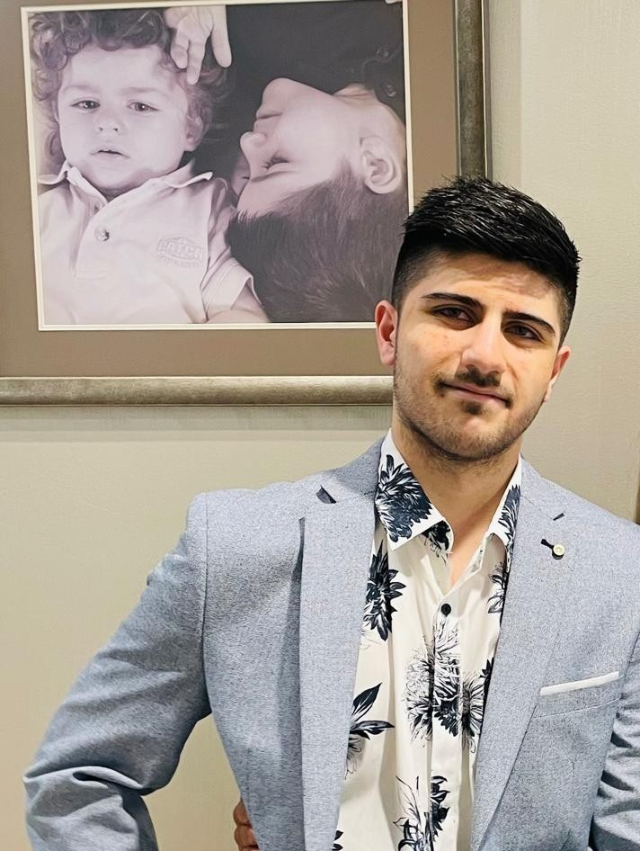

Hi, I'm Alexander.
IT student specialising in Data Engineering. Here's a bit more about who I am, what I care about, and what I'm working on right now.
about me

psst — add a file named profile.jpg next to this page to swap in your photo.
I'm an Information Technology student and aspiring Data Engineer, working toward a career as a Data Engineer or Software Engineer. I enjoy the end-to-end problem of getting data from a messy, real-world source into something clean, structured, and useful — and I like building the small, practical tools around that along the way.
I code in Python, SQL, HTML, CSS, Java and JavaScript, and I'm currently expanding into C++ and C#. Outside of coursework, I build personal projects to learn by doing — a password vault, a web scraper, a finance tracker, an ETL pipeline, and a firewall so far.
I'm always keen to learn, take on new projects, and connect with others in tech and data. Feel free to check out my work on GitHub, or reach out if you're hiring for internships or entry-level roles in software or data engineering.